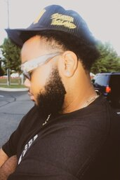

My name is Carlos Russell and I am one of the creators for the brand Three Two Clothing, also known as Thirty Two Clothing. My main goal with my brand is to create fashionable streetwear for people to express themselves in the most stylish way. I grew up in Detroit, Michigan where everyone dresses to impress on most occassions, especially in this day and age. Seeing how people dress while being at party's and other events really inspired me to make clothes that you typically wouldn't see. My plan is to get my brand off the ground and make sales off my website, hopefully at some point I get the chance to get my items in stores whether its small family owned shops or major retail stores.